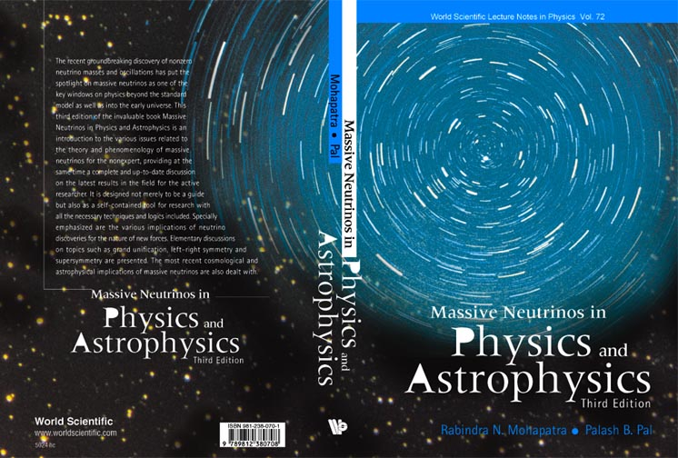
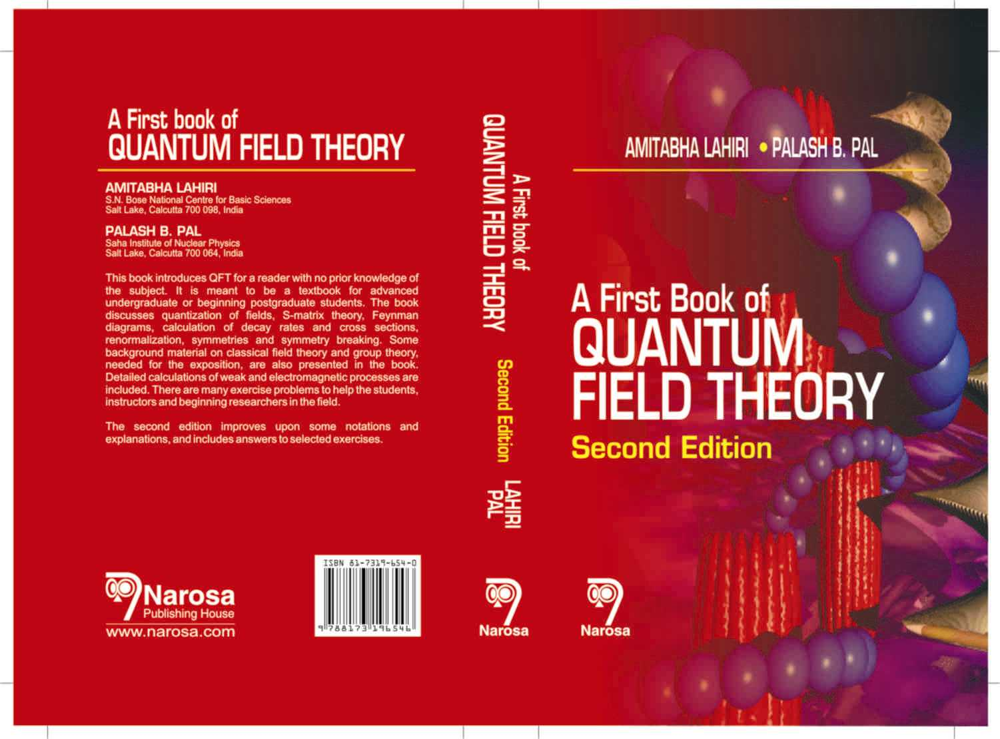
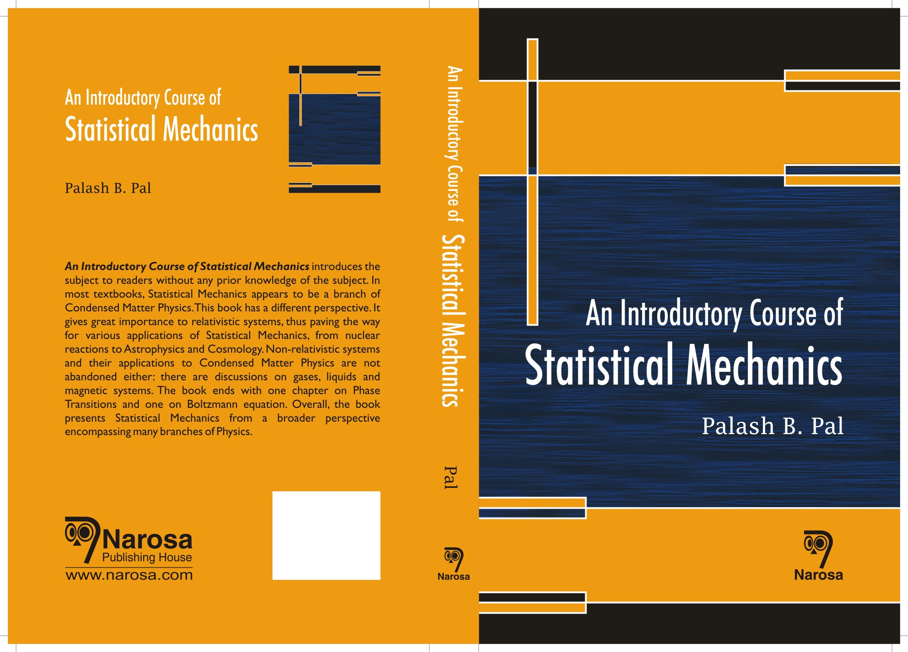
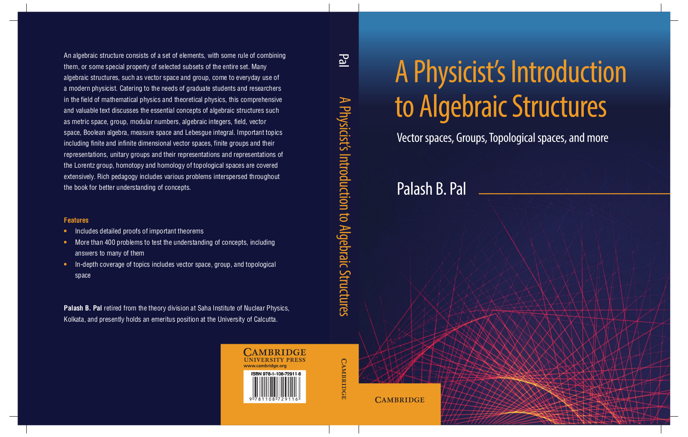
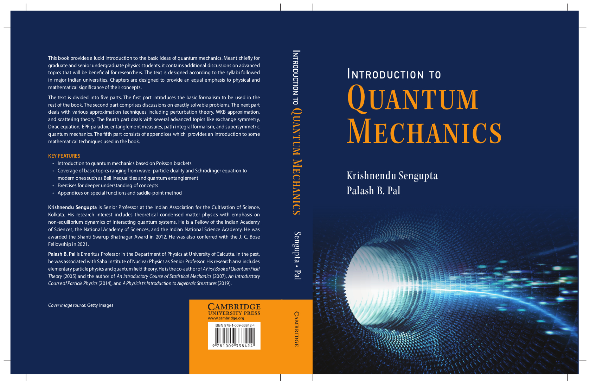
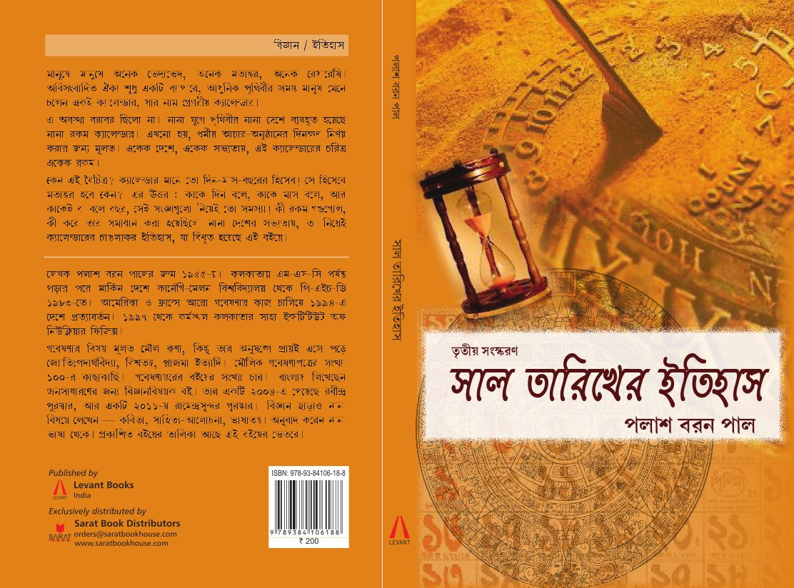
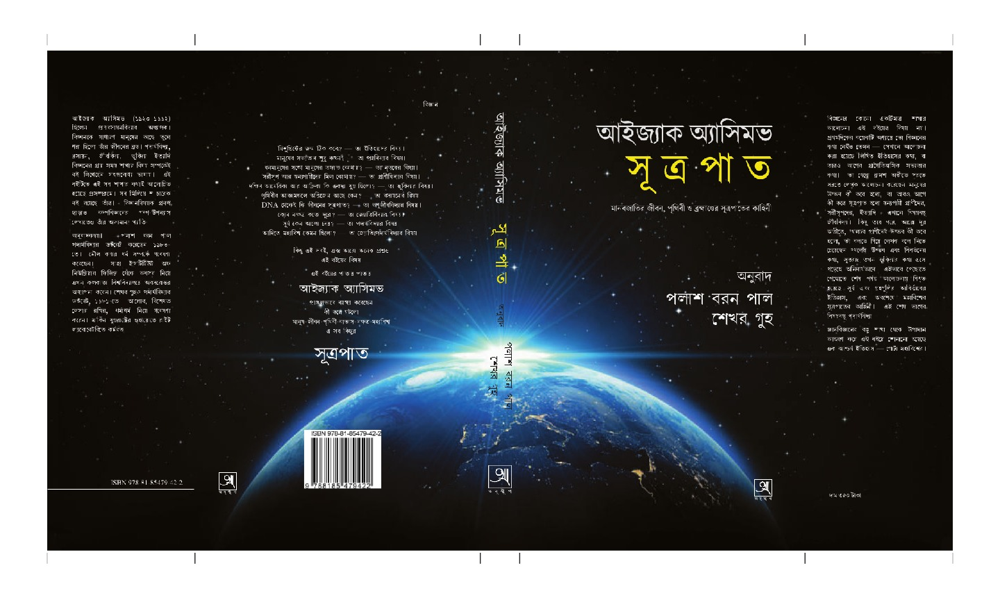

Fields of research interest
Fields of research interest
- Weak interactions, with specific emphasis on neutrino physics
- Beyond the standard model, including left-right symmetric model
and grand unification
- Particle properties in material medium, commonly (and
inappropriately) known as finite temperature field theory
- Particle properties in background magnetic fields
- Astrophysics and Cosmology related to Particle Physics
- Linearized theory of gravity
Top of page
Publications
(Click on the thumbnails for a larger view of the
covers)
-
Books on Science
Academic books
-

Massive neutrinos in Physics and Astrophysics
(with Rabindra N. Mohapatra)
A book on neutrino physics for researchers and students in the
field. World Scientific, Singapore, 1991.
[Enlarged editions: 1998, 2004.] ISBN: 978-981238071-5.
Contents
Index
Publisher's
page
Online ordering

A first book of Quantum Field Theory
(with Amitabha Lahiri)
A beginning level text
book on Quantum Field Theory.
Narosa Publishing House, New Delhi, 2000. [Second edition 2005.]
ISBN: 978-81-7319-654-6
Contents
Index
Publisher's page
Online ordering
Errata & Addenda

An introductory course of Statistical Mechanics
A text book on Statistical Mechanics for post-graduate as
well as advanced undergraduate students. ISBN: 978-1842654361.
Narosa Publishing House, New Delhi, 2007 [Reprint 2013].
Contents
Index
Publisher's page
Online ordering
Errata
 An introductory course of Particle Physics
A text book on Particle Physics for post-graduate students
as well as beginning researchers. ISBN: 978-1-48221698-1. CRC
Press, July 2014.
An introductory course of Particle Physics
A text book on Particle Physics for post-graduate students
as well as beginning researchers. ISBN: 978-1-48221698-1. CRC
Press, July 2014.
Contents
Index
Publisher's page
Online ordering
Errata

A physicist's introduction to Algebraic Structures
A text book on various topics of algebra which are useful
for physicists. Detailed discussion of vector spaces, groups and
topological spaces. Short introduction to many other algebraic
structures like metric spaces, rings, fields, measure spaces,
Boolean algebra. Intended for post-graduate students as well as
beginning researchers. ISBN: Hardback 978-1-108-49220-1;
Paperback 978-1-108-72911-6. Cambridge University Press. March
2019.
Poster
Contents
Index
Publisher's page
Online ordering
Errata

Introduction to Quantum Mechanics
(with Krishnendu Sengupta)
A text book on Quantum Mechanics for advance undergraduate
and post-graduate students as well as beginning researchers.
ISBN: Paperback 978-1-009-33842-4. Cambridge University Press,
2023.
Frontmatter (Contents, Preface, etc)
Errata
Popular-level books
-
 কী দিয়ে সমস্তকিছু গড়া (Ki diyé samastô-kichu
gorhā)
(What is everything made of)
Popular book on particle physics in Bengali. West Bengal State Book
Board, Calcutta, 1988. [Second edition 1997.]
কী দিয়ে সমস্তকিছু গড়া (Ki diyé samastô-kichu
gorhā)
(What is everything made of)
Popular book on particle physics in Bengali. West Bengal State Book
Board, Calcutta, 1988. [Second edition 1997.]
Contents
-

সাল-তারিখের ইতিহাস (Sa̅l-ta̅rikhér itihās)
(A history of dates and years)
A book in Bengali
on the development of calendars in various civilizations and its relation
to the development of Astronomy. Samatat Prakashan, Calcutta,
1994. [Second edition, Sarat Book Distributors, Calcutta, 2003; Third
edition 2015]
Contents
Publisher's page
-

সূত্রপাত (Sutrôpāt)
(Bengali translation of Isaac Asimov's
"Beginnings",
done
in collaboration with Shekhar Guha) Anustup,
Calcutta, 1997. [Edition: 2020].
Contents


{kind=link}
{kind=link}
{kind=link}
{kind=link}
{kind=link}
{kind=link}
{kind=link}
{kind=link}
{kind=link}
{kind=link}
{kind=link}
{kind=link}
{kind=link}
{kind=link}
{kind=link}
{kind=link}
{kind=link}
{kind=link}
{kind=link}
{kind=link}